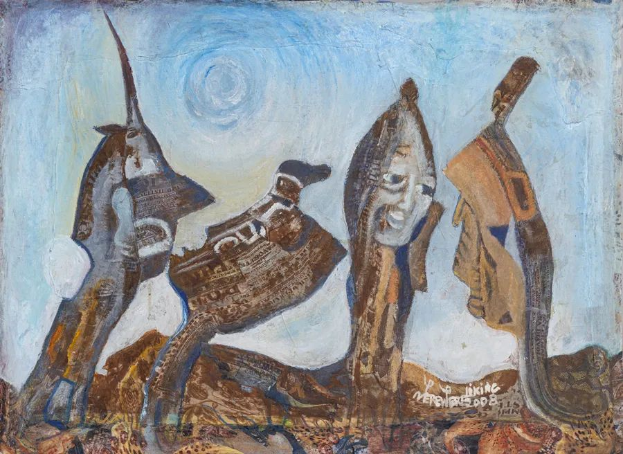

Depuis plus de quarante ans, Werewere-Liking a construit une carrière aux multiples facettes, donnant vie à des univers fluides et interconnectés. Sa créativité hétéroclite n’a eu de cesse d’être reconnue à l’échelle internationale. En 1992, elle est nommée Chevalier des Arts et des Lettres, en France. En 2000, elle reçoit la prestigieuse distinction du Prince Claus Award pour l’ensemble de ses contributions culturelles. En 2021, elle est nommée Commandeur de l’Ordre du Mérite culturel Ivoirien.
Ses œuvres visuelles ont été montrées à de nombreuses reprises à travers le monde, et ont récemment été sélectionnées pour la Biennale de Sao Paulo (Brésil, 2025) ; ou encore l’exposition internationale de La Biennale de Venise (Italie, 2026).
« L’œuvre de Werewere Liking instaure un royaume d’énergies puissantes dans lequel la sculpture, la parole et le mythe ne se contentent pas de coexister, mais vibrent sur une même fréquence rituelle. Les créations de Liking, faites d’éléments trouvés, recyclés et re-signifiés, ne sont pas de simples formes qui occupent l’espace : ce sont des corps enchantés, des inscriptions vivantes de la mémoire et de l’imagination. Ses poèmes prolongent cette expérience, reconfigurant la relation entre langage, matière et spiritualité, comme si chaque fragment parlait le langage secret du temps.
Rassembler, réassembler, ré-invoquer : ces gestes s’entrelacent comme des pratiques vertueuses contre l’oubli. Chez Liking, la réinvention du processus créatif est aussi une restructuration de la créativité qui palpite autour de la communauté, de la croissance collective, de la construction et de la quête de sens. L’artiste nomme ce champ créatif Ki-Yi Mbock, un concept issu de la tradition bassa du Cameroun, qui renvoie à un savoir universel suprême. Dans ce territoire, comme dans les temps anciens, l’art et la vie sont indissociables : les créations n’occupent pas simplement l’espace, elles le réorganisent, transformant les expériences en portails d’autonomie. »